Setup a new Jenkins pipeline¶
In this lab, we will create a new pipeline called class2-master on Jenkins.
Access Jenkins¶
Connect to Jenkins. It should be http://<IP of your VM>:1180/
- Login: TenantA
- Password: Pa55w0rd
Note
If you use UDF (F5 private cloud), you can either use the RDP Jumphost to access Jenkins or the shortcut in the interface
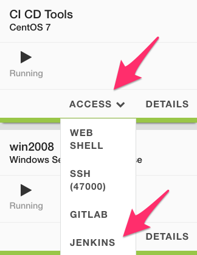{kind=link}
Once you’re authenticated, you should see something like this:
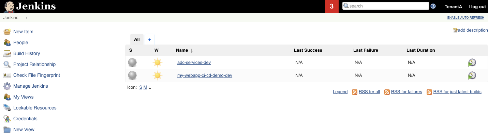{kind=link}
Since we already have some pipeline working with our GitLab server, some configuration has already been made. The main item is how to authenticate with GitLab. To review this setup, click on Manage Jenkins and then Configure System.
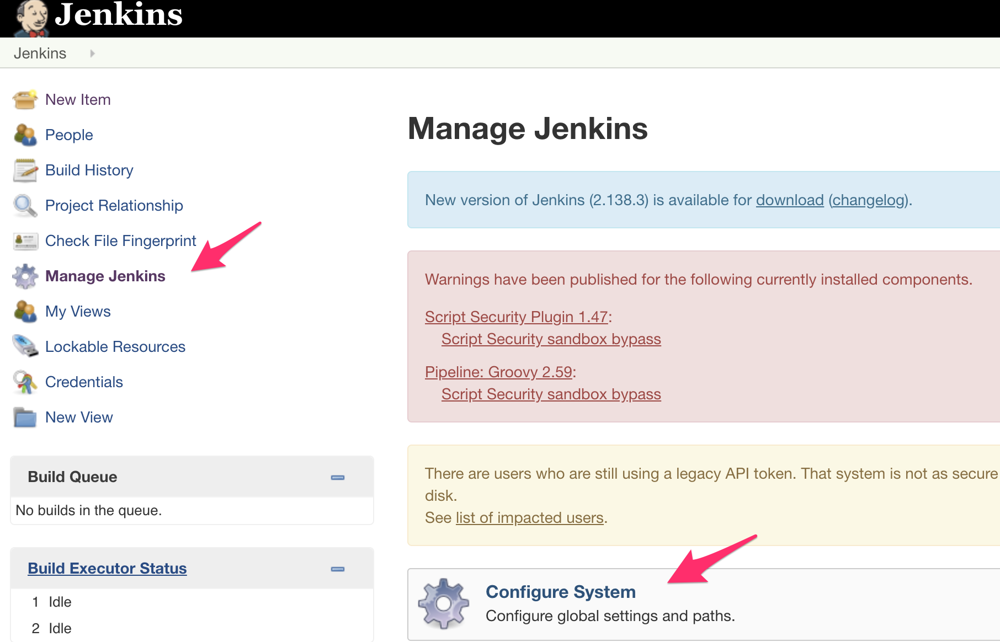{kind=link}
Scroll down to the Gitlab section. You’ll see that we have already setup a GitLab connection called local gitlab. We will use this connection name later in our new pipeline.
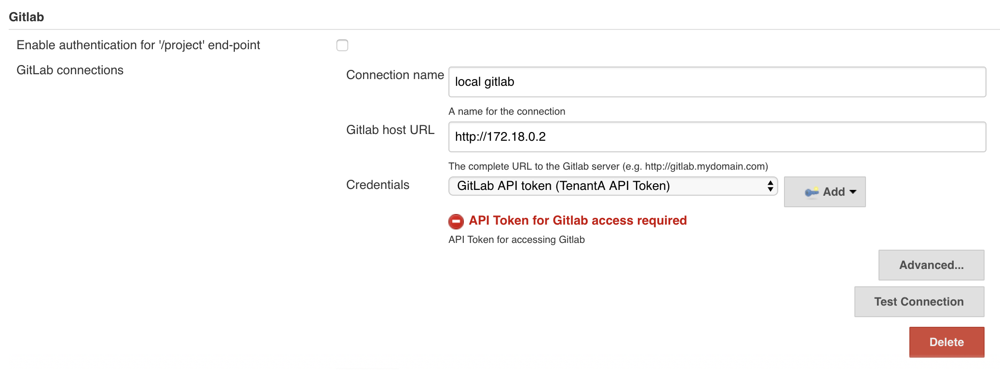{kind=link}
Note
You can see here that we referenced a credential called GitLAb API token. This token was created in GitLab. To generate an API Token, in GitLab go to your User Settings once you’re authenticated as TenantA.
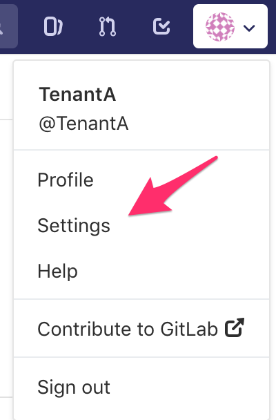{kind=link}
Select the Access Tokens and you’ll see the API Token we referenced in Jenkins
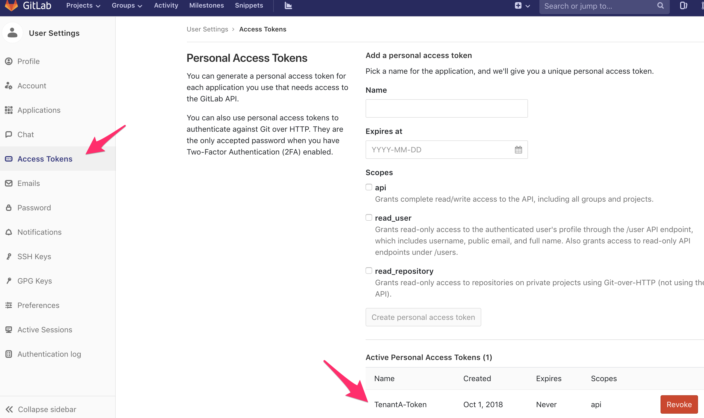{kind=link}
For Jenkins to be able to retrieve our repositories from GitLab, we also have setup some credentials. On the main page, click on Credentials. Here you’ll see an ID called TenantA-Gitlab, we will use this also in our new *pipeline.
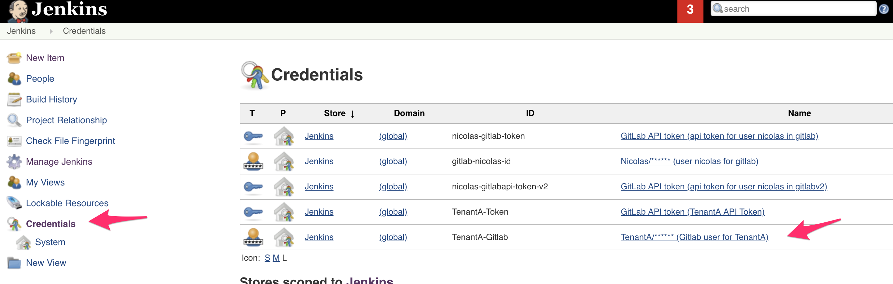{kind=link}
Create a new pipeline¶
To create a new pipeline, click on the New Item link.
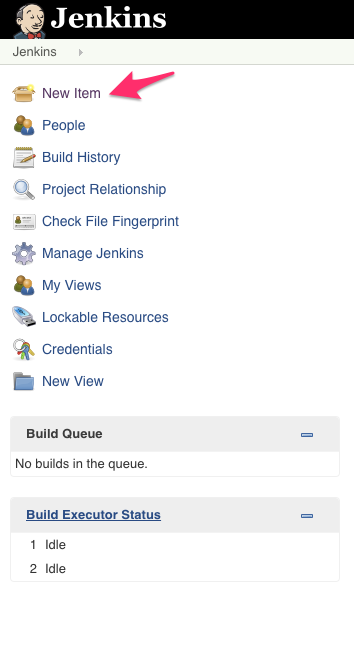{kind=link}
Setup the following:
- Item name: class2-pipeline
- Select Pipeline
{kind=link}
Click OK.
Here we setup the following:
Check github project.
In the Build Triggers section, check Build when a change is pushed to GitLab. GitLab webhook URL: http://172.18.0.3:8080/project/class2-pipeline. We will need to setup this WebHook later in GitLab
In the Pipeline section, Select Pipeline script from SCM.
For the SCM field, select git
For the Repository URL, specify the URL for your GitLab project
Note
if you use UDF or the VM, here you need to specify the IP of the GitLab container; hence: http://172.18.0.2/TenantA/Class2
Credentials, Select TenantA/…
Branches to build: development. This means that we will retrieve the branch that got updated and triggered the pipeline.
The Script Path field is to mention a File Name that Jenkins will look for into our repo to know what it needs to do. We will have to create this file later. Here it will look for a file called Jenkinsfile
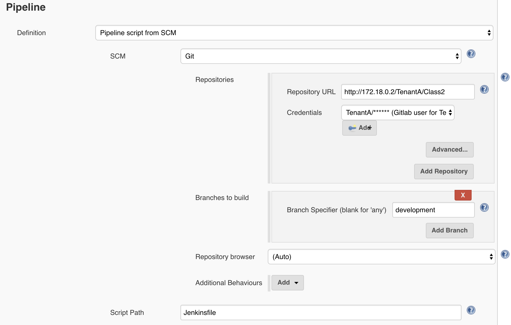
Click on Apply/Save. Your pipeline has been created.
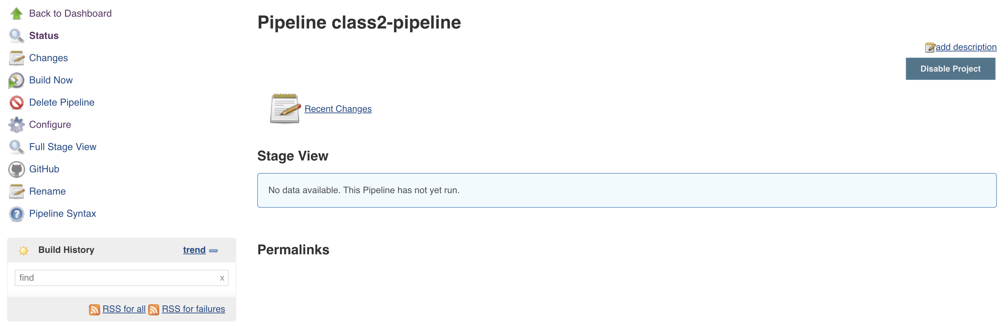
{kind=link}
{kind=link}
{kind=link}
{kind=link}
{kind=link}
We still need to do two things:
- Create a WebHook in GitLab to trigger our pipeline when our repo is updated
- add a Jenkinsfile to our GitLab repo to details what we need to do when our pipeline is triggered
Setup our GitLab Webhook¶
To create the WebHook, connect to your GitLab GUI.
Note
reminder to login into GitLab
- Login: TenantA
- Password: Pa55w0rd
{kind=link}
Click on your repo TenantA / Class 2. Click on Settings > Integrations.
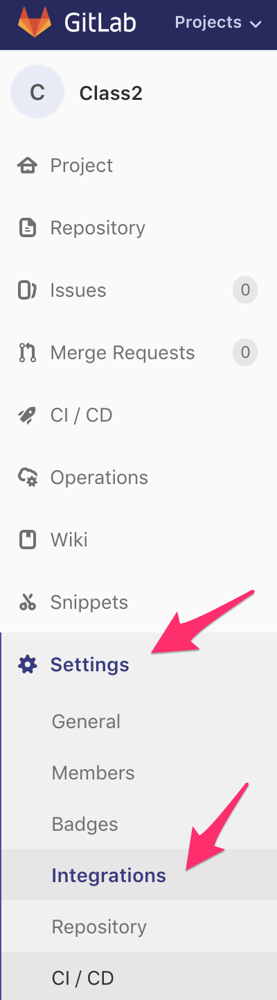{kind=link}
When we created our class2-pipeline, we saw the following during its setup:
This is the URL we should use as our WebHook: http://172.18.0.3:8080/project/class2-pipeline. In the GitLab GUI:
- use this URL in the URL field.
- leave Secret Token empty.
- uncheck Enable SSL verification
Click the Add webhook button. Once it’s saved, you should see the following (you may need to scroll down).
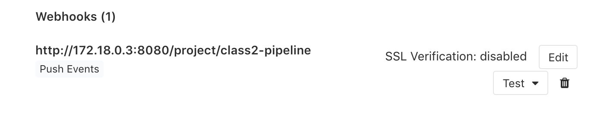{kind=link}
Note
don’t use the test button it won’t work. This is because we setup our pipeline to only accept push events from the development branch.
If you want to test your setup, go to your development branch and update the content of one of the file.
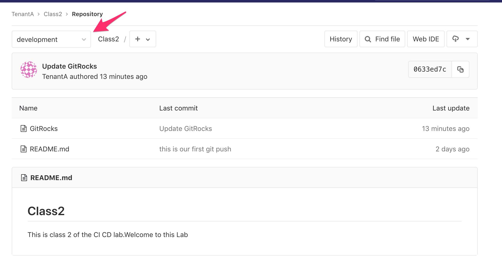{kind=link}
Once you’ve updated one of the two files, it will trigger our webhook.
- If you go back to the Jenkins GUI. You will see a red icon and
“stormy” cloud next our class2-pipeline pipeline. It means that the pipeline failed. This is expected and it shows that it got triggered by our WebHook test.
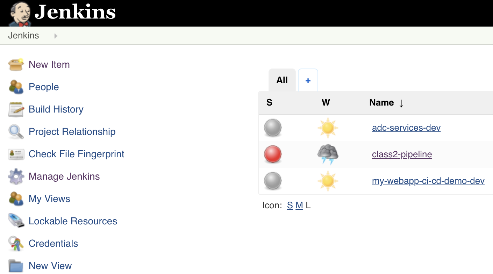Click on the class2-pipeline link and then click on the latest build history number. It should be #1
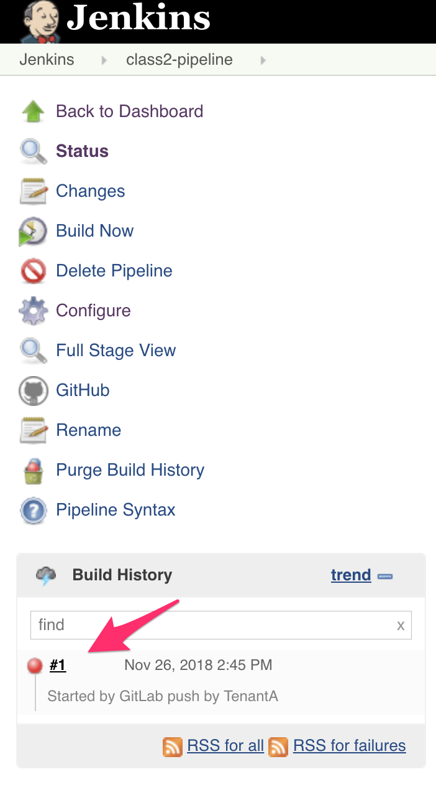Click on Console Output to see what happens with this build.
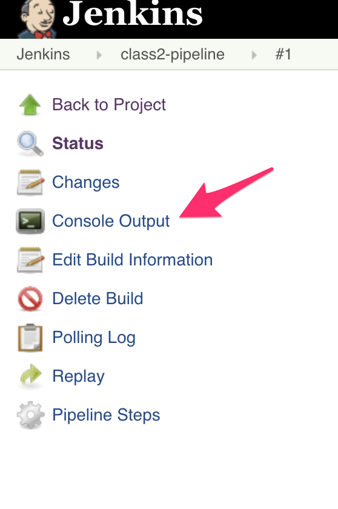You’ll see the output related to our pipeline being executed
Started by GitLab push by TenantA [Office365connector] No webhooks to notify [Office365connector] No webhooks to notify java.io.FileNotFoundException at jenkins.plugins.git.GitSCMFile$3.invoke(GitSCMFile.java:167) at jenkins.plugins.git.GitSCMFile$3.invoke(GitSCMFile.java:159) at jenkins.plugins.git.GitSCMFileSystem$3.invoke(GitSCMFileSystem.java:193) at org.jenkinsci.plugins.gitclient.AbstractGitAPIImpl.withRepository(AbstractGitAPIImpl.java:29) at org.jenkinsci.plugins.gitclient.CliGitAPIImpl.withRepository(CliGitAPIImpl.java:72) at jenkins.plugins.git.GitSCMFileSystem.invoke(GitSCMFileSystem.java:189) at jenkins.plugins.git.GitSCMFile.content(GitSCMFile.java:159) at jenkins.scm.api.SCMFile.contentAsString(SCMFile.java:338) at org.jenkinsci.plugins.workflow.cps.CpsScmFlowDefinition.create(CpsScmFlowDefinition.java:110) at org.jenkinsci.plugins.workflow.cps.CpsScmFlowDefinition.create(CpsScmFlowDefinition.java:67) at org.jenkinsci.plugins.workflow.job.WorkflowRun.run(WorkflowRun.java:303) at hudson.model.ResourceController.execute(ResourceController.java:97) at hudson.model.Executor.run(Executor.java:429) Finished: FAILUREThis is expected. Here it happens because we triggered the WebHook when the Jenkinsfile has not been created.
{kind=link}
{kind=link}
{kind=link}
We will setup the Jenkinsfile in our next lab.